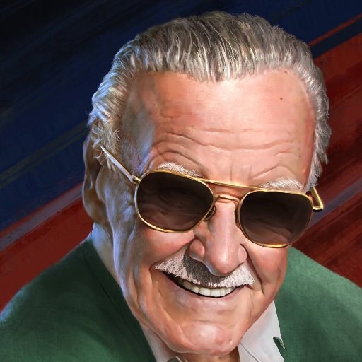

<ion-header no-border>
    <ion-toolbar>
        <ion-buttons slot="start">
            <ion-back-button text="Regresar" defaultHref="/"></ion-back-button>
        </ion-buttons>
        <ion-title text-capitalize>{{ title }}</ion-title>

        <ion-buttons slot="end" padding *ngIf="isAvatar">
            <ion-avatar>
                
            </ion-avatar>
        </ion-buttons>
    </ion-toolbar>
</ion-header>